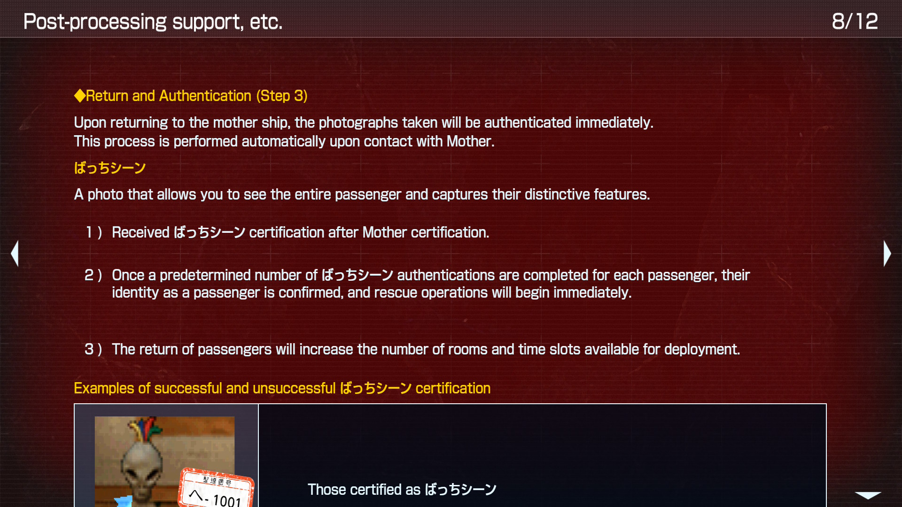
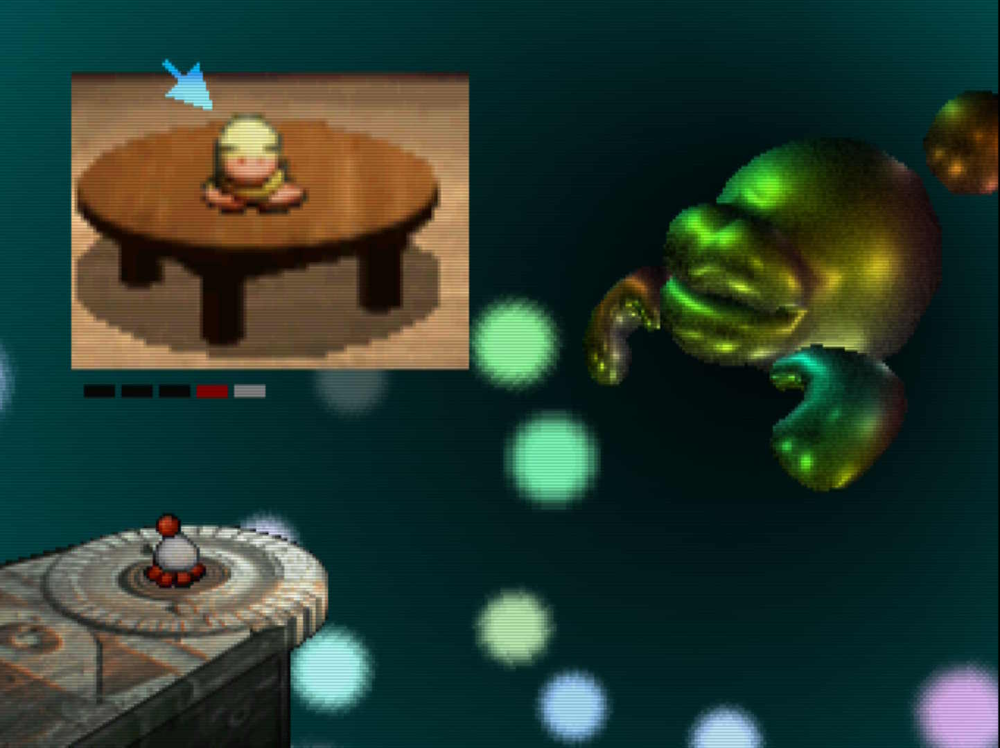
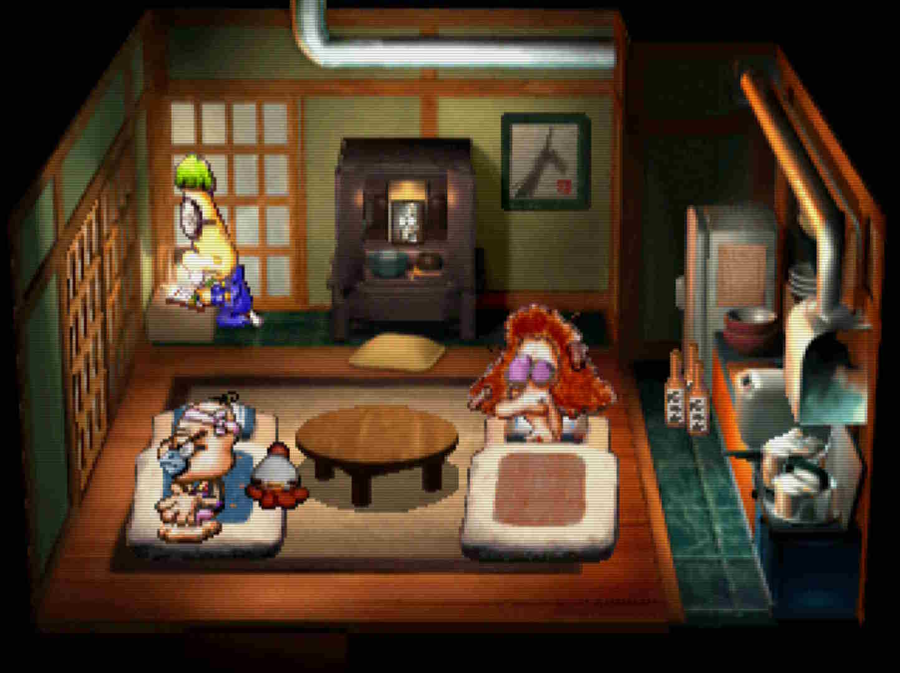
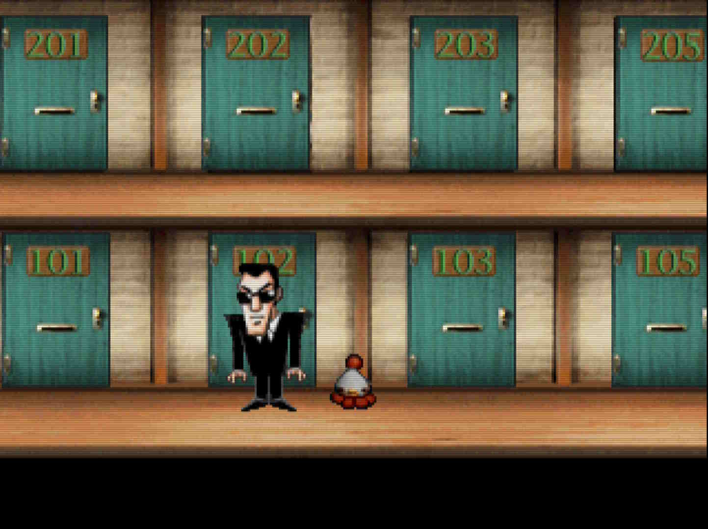
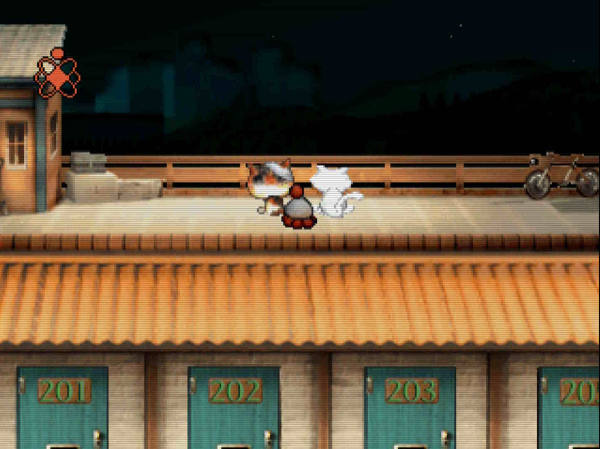
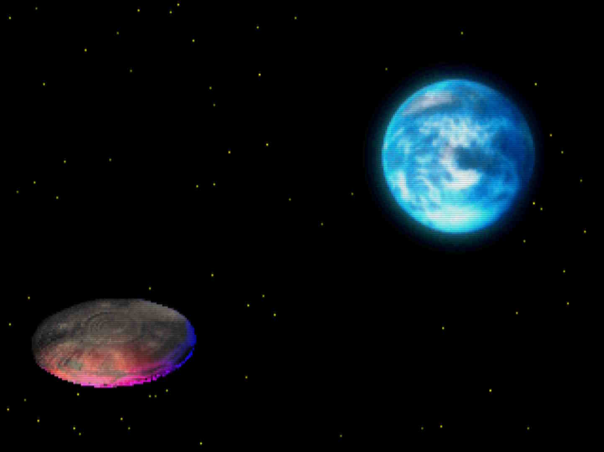

UFO -A day in the life- (PSX / Switch 2)
I've had my eyes on the games of Love-de-Lic for years now. They are probably best known in the English-speaking world for Moon: Remix RPG Adventure, but I'd occasionally stumble upon screenshots of their other games and be immediately drawn into their unique style. I own a physical copy of the re-release of Moon, but still have yet to actually dip my toes into a Love-de-Lic game yet properly. But a while ago I saw an announcement that another Love-de-Lic game was being brought to modern platforms, so I decided to finally bite the bullet and pick up Console Archive: UFO -A day in the life- for my Switch 2.

Console Archives Mini-Review
Before we get into the game itself, a quick mini-review of the Switch 2 "console archives" rerelease (I believe "console archives" is also available on PS5, so as far as I know this also applies to that version too!). Unlike the release of Moon which is its own standalone rerelease by Onion Games, this rerelease is part of Hamster Corporation's Console Archives series. In terms of playing the game, you're given a pretty barebones but passable options common in these emulated rereleases: save states, a CRT filter, customizable button mapping. Unfortunately no rewind or fast-forward buttons, but not too big of a deal.
A big dealbreaker to those who can't read Japanese is that... well the game ROM itself is completely unlocalized. You can buy this game on the US eShop, but the game contents are fully in Japanese. The Console Archive interfaces outside of the game are in English and this does include a manual which explains the basic premise and mechanics of the game. But... the translation is quite bad. I hate to say it, but I think Google Translate would have done better.


While the promise of an in-game English manual might sound nice to help guide players who can't read Japanese, I do think this specific manual is woefully inadequate. Don't buy these re-releases if you can't read Japanese. If there's a fan translation ROM hack, play that instead. Or otherwise try to find better written guides by fans of the game elsewhere.
And Now The Actual Game
Anyways, onto the game! UFO -A day in the life- is hard to describe but I'd best describe it as a cross between Pokémon Snap, Luigi's Mansion, and The Legend of Zelda: Majora's Mask. With a lot of Love-de-Lic's trademark weirdness thrown in. The basic premise of the game is that a space ship has crashed onto an alien planet and it is your job to rescue all the passengers and crew so they can be brought back home. Oh and the crash site is specifically a small apartment building on Earth.
The thing about all the passengers and crew of the ship is that
they are invisible, so you have to use a special camera to take
pictures that reveal their true forms. So while in each area, you
have to notice if anything's visibly strange and take pictures.
When you submit your photos to Mother
, you'll see if you
got a passenger in the photos or not.


But you can't just take any photo of a passenger. You specifically need to take pictures of the passengers doing special unique poses. This means you'll need to deduce when in a scene they might actually strike one of those poses. Once you've gotten pictures of each defined pose for a passenger, you'll be able to rescue them and bring them aboard your own UFO. This unlocks new zones for you to explore for even more passengers.
The game is broken up into nine areas. One for each apartment in the building, plus one extra for the hallway of the building. But each area has twenty four different hours you can visit at, which all adds up to 216 zones to unlock and explore throughout the game. You generally unlock the hours of the day in chronological order, so you'll start exploring rooms at midnight and as the game progresses you'll slowly watch a day pass by at this apartment building. A day in the life, if you will.


And that's the basic loop of the game. Enter a new zone, try to find any UFO passengers or crew, and if you're successful you'll hopefully rescue them and unlock more zones to explore. Do this until everyone's rescued and that's the game!
At the end of the day, UFO -A day in the life- is a puzzle game. You'll have to figure out when exactly a passenger will be striking their special pose (or ばっちシーン as it's called in the game). The game gives you some clues on this; once you've taken a picture of a passenger at all, you'll be able to see the list of poses you need to take pictures of. Each pose has a name that generally acts as a clue to its context, and as you play more of the game you start to catch onto its sense of logic.
Some of these puzzles are pretty fantastic. For example, there is a passenger whose list of poses are all rock-paper-scissors moves; if you ever see any apartment residents making a rock-paper-scissors hand shape, you can bet that this passenger will show up to play against them. Some of my other favorite puzzles include a golfing tiger who golfs across a few rooms of the building, a duck that reacts to specific kinds of high pitched noises, and a dancer who copies the dance moves of an apartment resident.
Whenever you're able to figure out one of these puzzles it's quite incredible. Unfortunately, the game has some puzzles that are not as good. Some passengers only have split-second opportunities to have their photos taken. The game is usually kind about these split-second passengers, with most of these events happening early within a scene so you can reset and try again quickly if you missed it. But there are a few that take place at the end of a full scene. Some puzzles are also just a bit obtuse, and a constant struggle for me was just figuring out where in the room a passenger would be located. There were plenty of times where I knew when to take a photo but didn't know where to take it, and had to make multiple trips to scan the whole room with my camera until I finally found them.
I'd love it if this game had some kind of more involved hint system. Perhaps if you got enough partial photos of a passenger, you'd be able to more easily identify where they are when present in a scene? I'd also love it if there was some kind of rapid-fire mode you could charge up since there's a delay between taking photos and that makes some of the split-second reaction photos way more difficult.
When you're not rescuing passengers, you're also just watching the residents of the apartment complex go through their day. There are plenty of interesting events that happen throughout the day, and as you explore each room at different times, you can slowly piece together a little story.


But unfortunately not every zone out of the 216 zones in the game has something interesting in it. There are only 50 passengers (and 5 crew members), and while some passengers have multiple poses that span multiple zones, that still leaves a lot of room for... nothing. As you play through this game, you'll see plenty of people just sleeping with nothing else happening. You'll also sit in empty rooms when people go to school/work/etc. I guess it is realistic as we do spend a good chunk of the day sleeping or away from home. But since the only way to tell if any passengers are present in a specific time slot is to visit it and watch your scanner to see if there's any activity, this means you'll sometimes just have to sit there and watch nothing happen for a whole time slot. I would have killed for a fast-forward button, either built into the game or included as part of the Console Archives rerelease.
Perhaps this is a bit of a skill issue, but I got stuck a few times during my playthrough. I explored all available zones, and couldn't find anything new, which meant there was some previous zone I had explored that had something I missed. The game does not do a good job telling you when you've missed stuff, so I highly suggest taking notes or even making a spreadsheet if you want to play this game without having to bust out a walkthrough for hints. The game opens up quite a bit in the middle, but near the end of the game you're funneled back into a final linear sequence so it actually gets a bit easier to keep track of things at the end.
This is another area where I wish there was a hint system. Some way to get nudged towards a time slot where I'm missing something would be great. The game does try to convey this info to you, but it only shows information for passengers you've already taken pictures of which makes it pretty useless. Especially since you might have photos of some passengers who have poses that only show up in time slots you don't have unlocked yet, so the "there's an unrescued passenger here" notification is just a distraction.


Aesthetically, I love how this game looks and sounds. Love-de-Lic's art style is pretty unique and years ago when I learned about Moon, I kind of fell in love with it. The game's music often only appears to match what's happening in a scene, kind of like a Looney Tunes cartoon, but I enjoy its off-kilter vibe (and heavy inclusion of the accordion!) and the other standard music tracks are pretty great. The credits song in particular is fantastic and is a great way to end the game.
I'm so glad that I've finally played one of Love-de-Lic's games. And I was able to play it in the original Japanese! I've heard you can get by without being able to read to play this game, though I'm not sure about that. Being able to read the scene names in Japanese helped me out a lot with the puzzle-solving process, and there are a few story moments near the end that benefit from knowing Japanese.
Overall, I think this game unfortunately has some lows with the empty rooms, lack of hint functionality, and a few obtuse or frustrating puzzles. But at other times this game truly shines with fun puzzles and progression, fun story surprises, and completely unique vibe. There's not really any game quite like UFO. And I'm glad I played it.


Before I wrap up, here's some tips for anyone who's interested in giving this game a try. I wish I knew some of these when I started the game!
- The list of a passenger's ばっちシーンs are always listed in chronological order. This means that if you took a photo of pose #2, you can find pose #1 chronologically earlier in the day.
- Multiple passengers can appear in one time slot. This one got me so many times. I rescued a passenger and assumed the time slot was clear. Turns out that my scanner was detecting multiple passengers at once and I missed one.
- The Cosmo Scanner works differently in the ROKA. In the hallway, the scanner seems to only announce a passenger if they're on the same floor as you.
- Use all ten of your photo slots while you're still gathering intel. I instinctively took nine photos each time I was exploring a new time slot, as taking the tenth photo instantly summons you back to the UFO. This was because I wanted to see the scene play out, but I eventually found it was better to get faster feedback on my photos and only once I've cleared out the room watch the full scene to absorb any plot details I might have missed.
Final Rating: 4/7 - A good game with some flaws. I'm glad I played it!
Back to Media Log